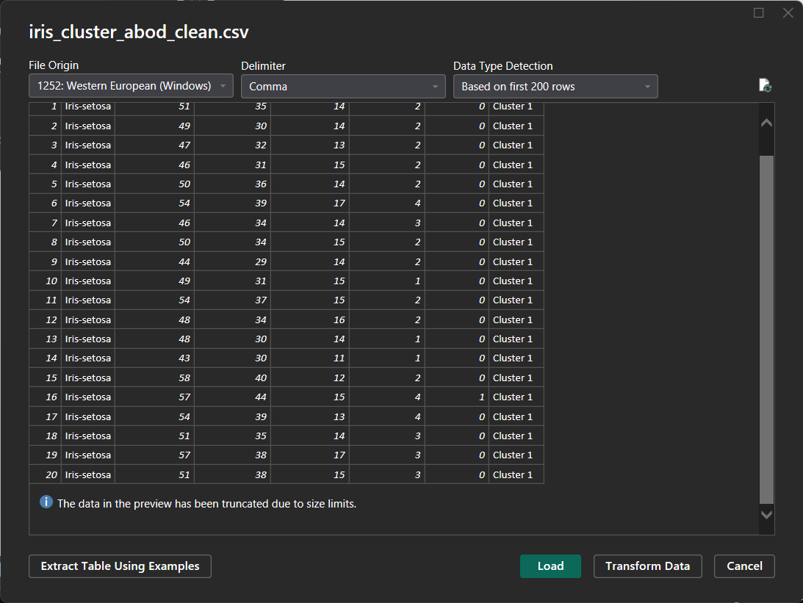
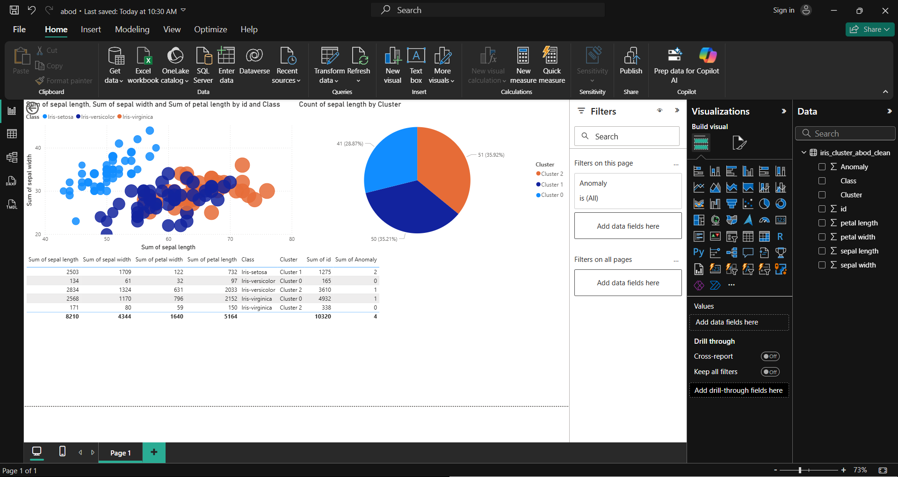

Deteksi Outlier dengan ABOD (Angle-Based Outlier Detection) pada dataset iris#
Langkah-langkah
Import library & load dataset Iris
import pandas as pd
# ganti path sesuai lokasi file CSV hasil cluster outlier iris
df = pd.read_csv("iris_outlier_cluster.csv")
print(df.head())
id Class sepal length sepal width petal length petal width \
0 1 Iris-setosa 5.1 3.5 1.4 0.2
1 2 Iris-setosa 4.9 3.0 1.4 0.2
2 3 Iris-setosa 4.7 3.2 1.3 0.2
3 4 Iris-setosa 4.6 3.1 1.5 0.2
4 5 Iris-setosa 5.0 3.6 1.4 0.2
Anomaly Cluster
0 0 Cluster 1
1 0 Cluster 1
2 0 Cluster 1
3 0 Cluster 1
4 0 Cluster 1
Dataset berisi 151 baris, 8 fitur id,Class,sepal length,sepal width,petal length,petal width,Anomaly,Cluster
Pisahkan fitur numerik
Kalau ada kolom cluster/label, jangan dipakai untuk deteksi outlier.
X = df.select_dtypes(include=["float64", "int64"])
print(X.columns)
Index(['id', 'sepal length', 'sepal width', 'petal length', 'petal width',
'Anomaly'],
dtype='object')
Jalankan ABOD
Pastikan sudah install pyod:
pip install pyod
from pyod.models.abod import ABOD
# Inisialisasi ABOD (anggap 5% data outlier)
abod = ABOD(contamination=0.05)
abod.fit(X)
# Tambahkan hasil prediksi ke dataframe
df["outlier_abod"] = abod.labels_
print(df["outlier_abod"].value_counts())
outlier_abod
0 142
1 8
Name: count, dtype: int64
0 = inlier, 1 = outlier.
Hapus outlier dari dataset
df_clean = df[df["outlier_abod"] == 0].drop(columns=["outlier_abod"])
print(df_clean.shape)
(142, 8)
Dataset bersih akan lebih kecil dari 151 baris karena outlier dihapus
Simpan dataset bersih ke CSV
df_clean.to_csv("iris_cluster_abod_clean.csv", index=False)
print("Dataset bersih disimpan sebagai iris_cluster_abod_clean.csv")
Dataset bersih disimpan sebagai iris_cluster_abod_clean.csv
Visualisasi menggunakan Power BI#
setelah dataset hasil hapus outlier dengan ABOD sudah siap, kita bisa lanjut ke visualisasi di Power BI
Berikut alurnya step-by-step:
Import Dataset ke Power BI
Buka Power BI Desktop.
Klik Home → Get Data → Text/CSV.
Pilih file iris_cluster_abod_clean.csv.
Klik Load.  Dataset bersih sekarang sudah ada di Power BI.
Persiapan Data
Pastikan kolom-kolom numerik (sepal length, sepal width, petal length, petal width, Anomaly, id) dikenali sebagai Whole Number dikarenakan datanya hanya angka bulat.
Kolom Class & Cluster ubah ke Text.
Visualisasi yang Bisa Dibuat
A. Scatter Plot (untuk melihat sebaran setelah hapus outlier)
Insert → Scatter chart.
X-axis: sepal length (cm)
Y-axis: sepal width (cm)
Legend: Class atau Cluster
Size: bisa isi dengan petal length (cm)
Values: id Ini memperlihatkan distribusi tiap cluster tanpa outlier.
B. Cluster Distribution Gunakan Pie Chart
Legend: cluster
Values: Count of rows Dikarenakan belum ada Count of rows, maka gunakan field apa saja (misal sepal length) lalu ubah ke Count di panel Value → klik dropdown → pilih Count.
C. Tampilkan dalam Table View
Dari Visualizations pane, pilih ikon Table (bentuknya kotak dengan baris-baris).
Drag & drop kolom yang ingin ditampilkan dari Fields pane. Hasilnya berupa tabel interaktif yang bisa diurutkan
D. Dashboard Lengkap
Kiri atas → Scatter plot (Cluster vs fitur)
Kanan atas → Pie chart (proporsi cluster)
Bawah → Tabel outlier (detail data hasil setelah outlier dihapus dengan ABOD) 